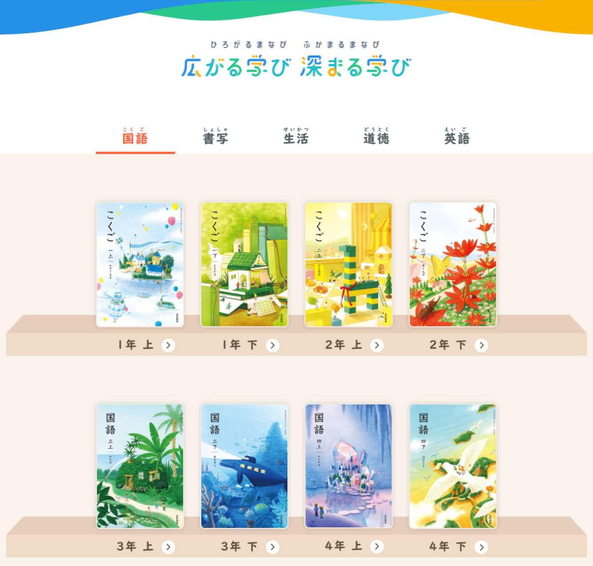
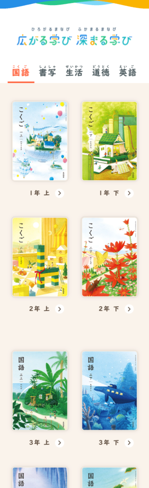
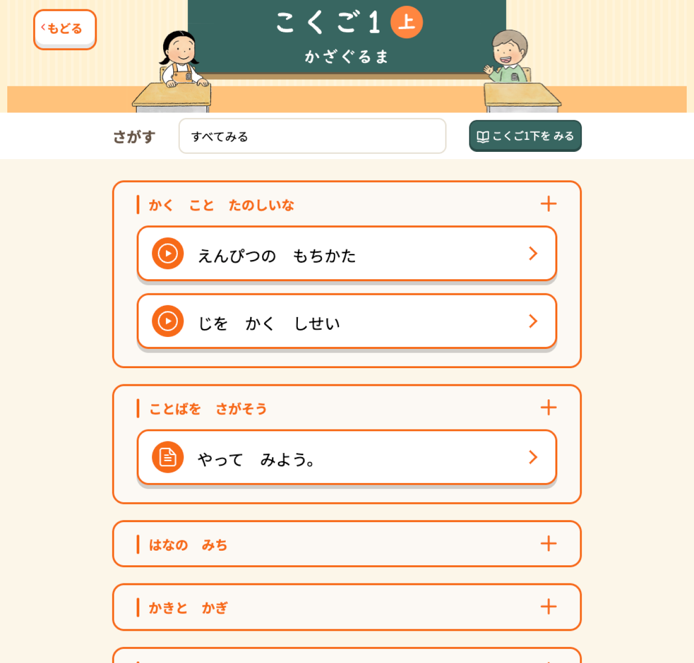
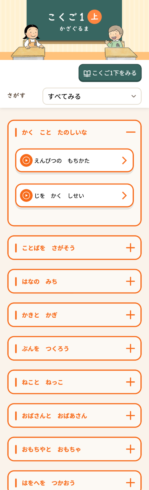
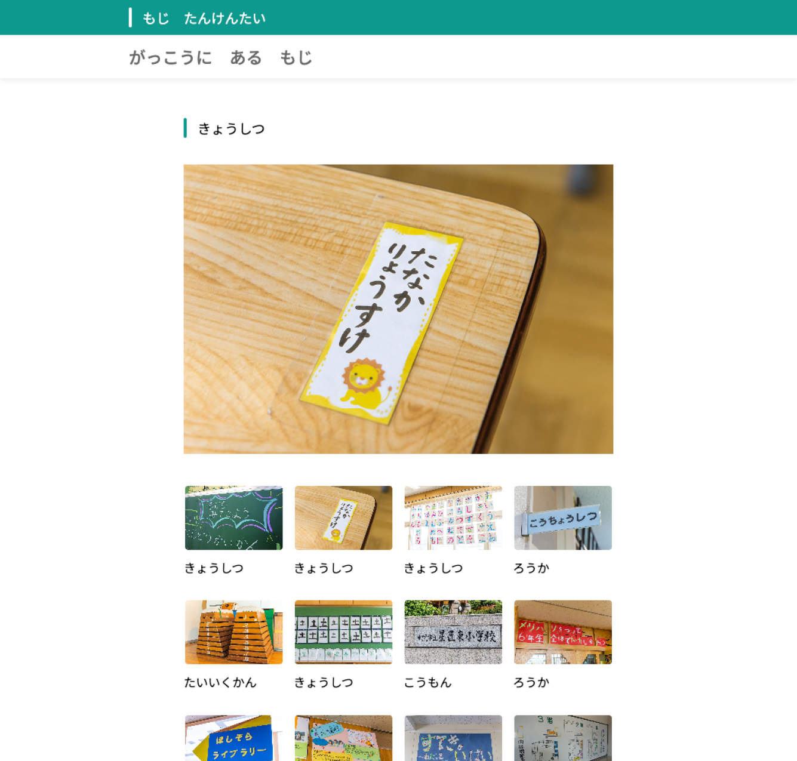
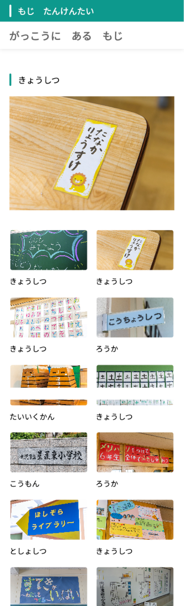

Mitsumura Tosho
QR Learning Support Site
ネオスが株式会社
光村図書 QRコード連携 学習補助サイト「広がる学び・深まる学び」制作
- 担当役割
- Webデザイン・コーディング
- 制作年・期間
- 2022年 5月 ~ 9月 4カ月
- チーム規模
- ディレクター1名 Webデザイナー1名 コーダー1名 システムエンジニア1名 プロデューサー1名
- 使用ツール
- Figma・Illustrator・Photoshop・HTML・CSS・JavaScript
Overview
光村図書の小学校教科書に掲載されたQRコードを読み取ると、デバイス上に補助学習コンテンツが表示されるWebサイトの関連ページデザイン・コーディングを担当。国語・生活・道徳・英語・書写の全教科、1〜6年生分のコンテンツを、子どもから教師まで誰もが迷わず使えるナビゲーション設計で構築しました。本案件での実績が評価され、その後の15名体制プロジェクト参加につながりました。
Mitsumura Tosho
https://m-manabi.jp/06s/





Strategy
- 教科・学年・上下巻という複雑な階層をシンプルなサイトマップに整理
- QRコード経由アクセスを前提に、トップを介さず直接コンテンツへ到達できる導線を確保
- 教科書表紙画像をサムネイルに採用し、子どもが自分の教科書を即座に識別できる構成に
- 週次レビューを導入し、品質チェックの抜け漏れを防止
Key Contributions & Results
- ひらがなルビ付き表記（例：「国こく語ご」）で低学年の自立操作を実現
- 大量ページを統一ルールでコーディングし、品質と制作効率を両立
- 本案件の実績・品質が評価され、15名体制の大規模プロジェクトへの参加につながった